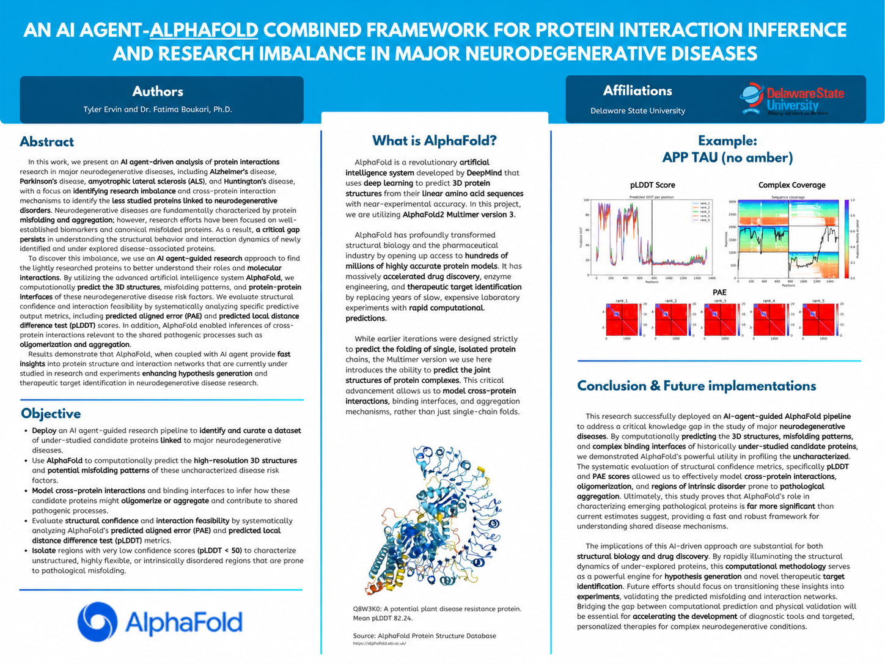

Research | Delaware State University
AI Agent + AlphaFold Protein Interaction Inference
An AI-agent-guided research framework for investigating under-studied proteins and cross-protein interactions associated with major neurodegenerative diseases.

Research Question
Research on Alzheimer's disease, Parkinson's disease, amyotrophic lateral sclerosis, and Huntington's disease often centers on well-established biomarkers and canonical misfolded proteins. This work asks how computational tools can help investigate less-studied disease-associated proteins and the interactions that may connect their pathogenic mechanisms.
Framework
- Use an AI research agent to identify and curate under-studied proteins linked to major neurodegenerative diseases.
- Apply AlphaFold2 Multimer version 3 to predict protein structures, complexes, and potential binding interfaces.
- Examine possible cross-protein interactions, oligomerization, aggregation, and shared disease mechanisms.
- Turn computational results into hypotheses that can guide later laboratory validation.
Evaluation
The study evaluates predicted local distance difference test scores (pLDDT) and predicted aligned error (PAE) to assess local structural confidence, the relative placement of protein regions, and the feasibility of modeled interactions. Very low-confidence regions can also point to flexible or intrinsically disordered areas that may be relevant to pathological misfolding.
Research Value
The framework provides a faster way to explore proteins that receive less experimental attention and to prioritize structures or interaction networks for follow-up work. Its outputs are computational hypotheses; future work should test the predicted misfolding patterns and interaction networks experimentally.
Authors
Tyler Ervin and Dr. Fatima Boukari, Ph.D. — Delaware State University.